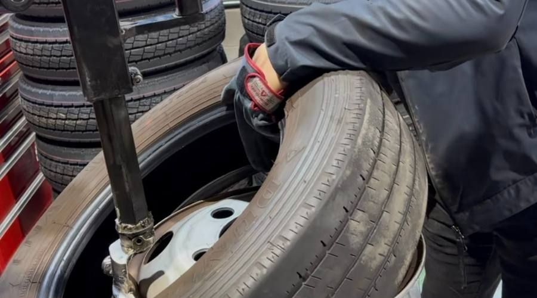
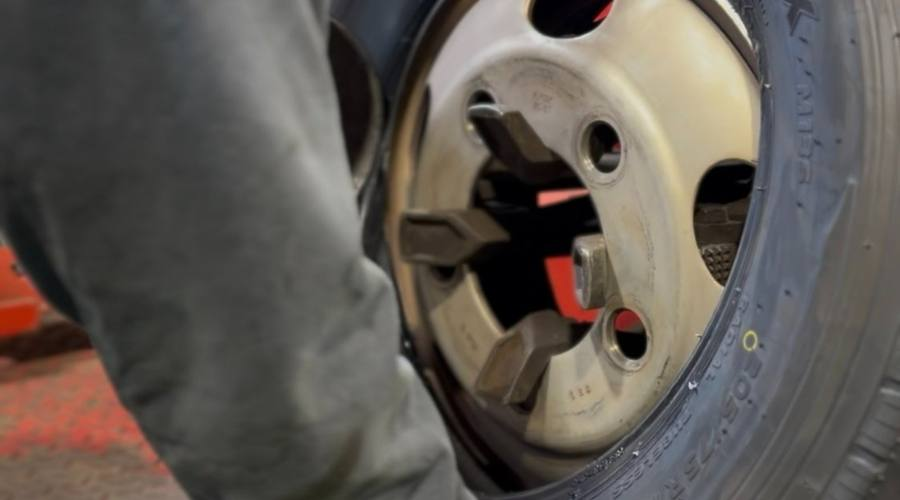
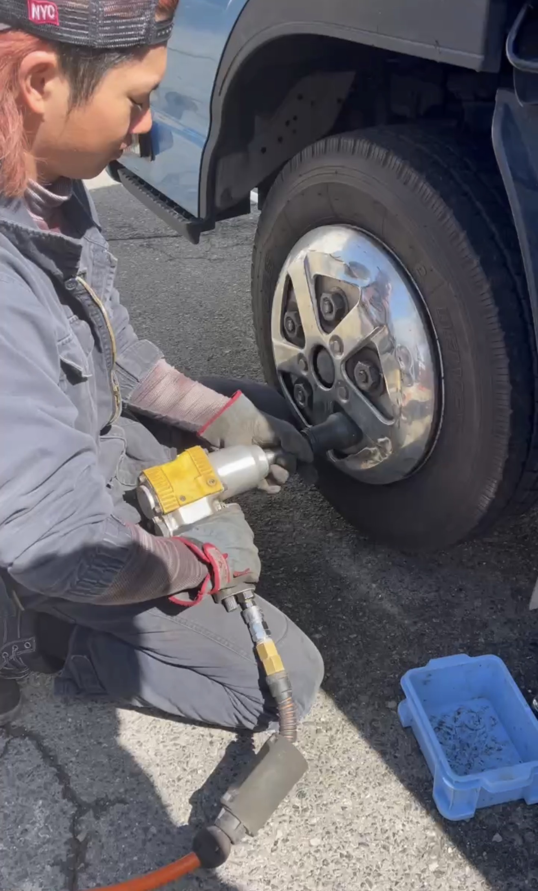

タイヤが止まれば、物流が止まる。
食卓に届く食材も、建設現場の資材も——
その足元を守るのが、私たちの仕事です。
食卓に届く食材も、
子どもが待つ家まで届く荷物も、
仕事を終えて家に帰る誰かの足取りも。
その「あたりまえ」の一歩手前に、
私たちが整えたタイヤがある。
関わるのはほんの一点。
その一点を、毎日整えています。

達成感は大きな数字じゃない。目の前のトラックの交換がきちんと終わったとき——その瞬間の積み重ねが、誇りになっていく。

少しズレていても構わない。そこから修正すればいい。そこにしか"伸びしろ"はない——それがこの会社の考え方です。

「今日も安全に運べるように整える」——その安心は見えないけれど、確かにそこにある。地道だけど、かっこいい仕事にしたい。
正解は一つじゃない。技術を極める人、お客さんとの関係を築く人、後輩を育てる人。あなたに合ったかたちで成長できる環境を用意しています。
タイヤ交換・点検の基礎から丁寧に教えます。最初はできなくて当たり前。先輩と一緒に、一つひとつ覚えていきましょう。
入社〜技術に自信がついたら、お客様との窓口も担当します。「このタイヤについて相談したい」という声に自分で答えられるようになる。
1〜2年目経験が積まれると、自然に「教える側」になっていく。後輩の成長を見守ることが、自分のスキルをさらに深めることにもつながります。
3年目〜教育担当・マネジメント・新規事業——どこへ向かうかは、あなたと一緒に考えます。年齢を重ねても安心して働ける役割設計を目指しています。
長期的に体が資本の仕事だからこそ、会社がジム代をサポート。代表が一番大事にしている福利厚生です。心身を整え、長く働ける環境を本気で作っています。
詳しく見る →疲労回復のマッサージ補助と、必要なサプリメントを会社から支給。日々の体のメンテナンスも仕事のうちと考えています。
詳しく見る →五日市エリアの本社・整備工場と、東広島の志和倉庫。住まいや生活スタイルに合わせて、通いやすい拠点で働けます。
詳しく見る →技術・営業・管理、それぞれに適した役割を一緒に探します。「なんでもやれ」ではなく「あなたに合った仕事を」。
詳しく見る →履歴書より先に、人を見たい。
気軽にお問い合わせください。
必須項目だけでもOKです。気軽にお送りください。
担当より2営業日以内にご連絡します。